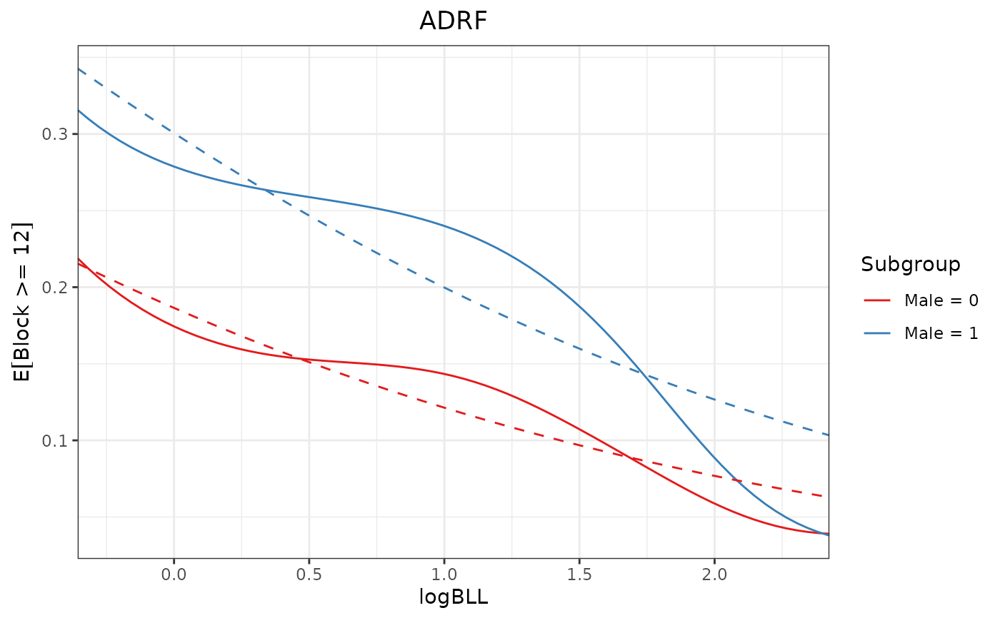
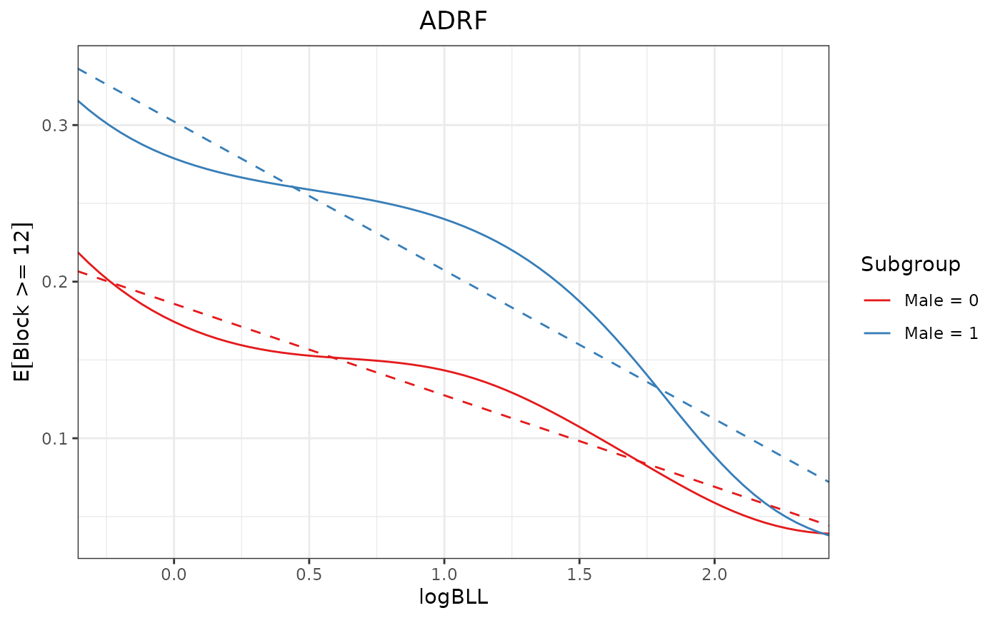

Test omnibus hypotheses about an effect curves
Source:R/summary.effect_curve.R
summary.effect_curve.Rdsummary() tests an omnibus hypothesis about an effect curve. For example, it can be used to test that the ADRF is flat, that the contrast between two ADRFs is 0 everywhere, or that the AMEF is 0 everywhere.
Arguments
- object
an object of class
effect_curve; the result of a call toadrf()or a function that modifies it.- hypothesis
the hypothesis to be tested. Allowable options include
"flat"(the default),"linear","quadratic","cubic", a one-sided formula corresponding to a projection model, or a single number (e.g., 0). See Details. The default is"flat"for ADRFs and 0 otherwise.- method
string; the method used to compute the p-value of the test. Allowable options include
"sim"for simulation-based,"imhof"for Imhof's approximation,"davies"for Davies's approximation,"liu"for Liu's approximation,"satterthwaite"for Satterthwaite's approximation, and"saddlepoint"for a saddlepoint approximation. Default is"imhof"when the CompQuadForm package is installed, otherwise"saddlepoint"when the survey package is installed, and"sim"otherwise. See Details.- subset
an optional logical expression indicating the subset of the subgroups for which to perform tests. Can only be used when
bywas supplied to the original call toadrf(), and only to refer to variables defining subgroups.- transform
whether to perform the test on the transformed estimates. Allowable options include
TRUE,FALSE, or a function specifying a transformation. Ignored unlessobjectis an ADRF object. See Details.- df
the "denominator" degrees of freedom to use for the tests. Default is to use the residual degrees of freedom from the original model if it is a linear model and
Infotherwise.- nsim
when
methodis"sim", the number of iterations used to simulate the p-values. Higher numbers give more accurate p-values subject to less Monte Carlo error but are slower and require more memory. Default is 1,000,000.- ...
when
methodis"imhof","davies", or"liu", further arguments passed toCompQuadForm::imhof(),CompQuadForm::davies(), orCompQuadForm::liu(), respectively.- x
a
summary.effect_curveobject.- digits
numeric; the number of digits to print.
Value
An object of class "summary.effect_curve", which is a data.frame with a column for the p-value and, for stratified effect curves or contrasts thereof, additional columns identifying the subset to which the p-value refers.
Details
summary() performs an omnibus test for an effect curve. The hypothesis tested is determined by the argument to "hypothesis". When supplied as a single number, summary() tests whether all values on the effect curve are equal to that number. When supplied as a one-sided formula, summary() tests whether the projection of the effect curve model onto the model represented in the formula is sufficient to describe the effect curve. The test itself tests whether the residuals around the projection are all equal to 0, incorporating the uncertainty in estimating the effect curve. See curve_projection() for more information on how the curve projection and the uncertainty in the residuals are computed.
"flat" tests whether all values on the curve are equal to each other (i.e., whether the curve is flat), without specifying what value they are equal to. This is equivalent to testing whether the variance around the mean estimate is different from 0 or whether an intercept-only projection model is sufficient. "linear" tests whether the curve is linear, i.e., whether the residuals around linear projection of the curve are all 0. "quadratic" and "cubic" test whether the curve is quadratic or cubic, respectively, using the same method.
Rejecting the null hypothesis means that the curve is more complicated than the specified model. For example, rejecting the null hypothesis that the curve is linear implies that the curve is nonlinear (and, therefore, not flat either).
The test involves computing a test statistic, specifying its distribution under the null hypothesis, and computing the p-value using the compliment of the cumulative density function of the distribution evaluated at the test statistic value. The test statistic depends on "hypothesis". For hypothesis equal to a constant, say, \(c\), the test statistic is
$$T^* = \int_\mathcal{A} (\theta(a) - c)^2 \ da$$
Otherwise, the test statistic is
$$T^* = \iint_\mathcal{A} (\theta(a) - \hat{\theta}_0(a))^2 \ da$$
where \(\hat{\theta}_0\) is the projection of \(\theta(a)\) onto the null subspace specified by hypothesis.
Each of these can be approximated as a quadratic form, \(T=\mathbf{\Theta}'\mathbf{W}\mathbf{\Theta}\) where \(\mathbf{\Theta}\) is a vector of estimates at evaluation points along the curve and \(\mathbf{W}\) is a diagonal matrix of weights implementing a trapezoidal approximation to the integral. The null hypothesis is that \(T=0\), which approximates the null hypothesis that \(T^*=0\). Each of the allowable options to method corresponds to a method of approximating the distribution of \(T\) under the null hypothesis:
"sim"simulates the null distribution by simulating from a multivariate normal distribution under the null hypothesis and computing the test statistic in each simulation. The p-value is the proportion of simulated estimates greater than the observed test statistic. Whendfis notInf, the simulation is done from a multivariate t-distribution."imhof","davies", and"liu"assume the test statistic follows a generalized \(\chi^2\)-distribution and approximate its CDF numerically."imhof"tends to be the most accurate and is recommended. These methods require the CompQuadForm package to be installed."satterthwaite"also assumes the test statistic follows a generalized \(\chi^2\)-distribution, but this distribution is approximated using a scaled F-distribution with the same first two moments."saddlepoint"also assumes the test statistic follows a generalized \(\chi^2\)-distribution, and this distribution is approximated using a saddlepoint method as implemented insurvey::pFsum(). This method requires the survey package to be installed.
In general, we recommend using method = "imhof", though this requires CompQuadForm to be installed (and is the default when it is). method = "saddlepoint" has also been shown to be quite accurate and very fast. When using "sim", increasing nsim improves the accuracy of the p-value by reducing Monte Carlo error. The default value of 1e6 ensures that the simulated p-value is within .0005 of the true p-value with at least 98\
Transform
When the effect curve is an ADRF and the outcomes are bounded (e.g., a probability between 0 and 1), the transform argument can be specified, which changes the details of the tests.
The tests above assume the estimates along the effect curve are normally distributed (or t-distributed when df is not Inf). However, when the outcome is bounded (e.g., a probability bounded between 0 and 1), this assumption may not be valid for the ADRF in finite samples. transform transforms the estimates to ones that are unbounded and computes the corresponding distribution of transformed estimates using the delta method. By default, if a generalized linear model is used for the outcome with a non-identity link function, the estimates are transformed by the link function to be on an unbounded scale. Note this is not the same as using the linear predictor for the effect curve; this is simple a transformation of the estimated points along the curve already computed. When hypothesis is a number, that number is also transformed.
Tests on the transformed and untransformed ADRFs correspond to different hypotheses; the difference is not simply a matter of the appropriate distribution of the statistic. For example, for binary outcome model with a logistic transformation, testing that the transformed ADRF is linear corresponds to testing whether the ADRF is a sigmoid function, whereas testing that the untransformed ADRF is linear corresponds to testing whether the ADRF is a straight line. These choices correspond to how the projection of the ADRF is formed; see curve_projection() for details. See Examples for an example with a binary outcome. In the example, there is evidence to reject that the transformed ADRF is linear for one of the groups, indicating that a sigmoid function is not sufficient for describing the ADRF, but there is indeterminate evidence (at the .05) to reject that the untransformed ADRF is linear for either group, indicating that a linear function is sufficient for describing the ADRF (at least in the treatment range examined).
See also
adrf()for computing the ADRFsummary.curve_est()for performing inference on individual points on an effect curveplot.effect_curve()for plotting the effect curvecurve_projection()for projecting a simpler model onto an effect curve
Examples
data("nhanes3lead")
fit <- glm(Block >= 12 ~ poly(logBLL, 3) *
Male * (Age + Race + PIR + NICU +
Smoke_Pregnant),
data = nhanes3lead,
family = binomial)
# ADRFs of logBLL on P(Block >= 12) within
# groups defined by `Male`
adrf1 <- adrf(fit, treat = "logBLL",
by = ~Male)
adrf1
#> An effect_curve object
#>
#> - curve type: ADRF
#> - response: Block >= 12
#> - treatment: logBLL
#> + range: -0.3567 to 2.4248
#> - by: Male
#> - inference: unconditional
#>
#> Use `plot()` (`?adrftools::plot.effect_curve()`) to plot the curve, `summary()` (`?adrftools::summary.effect_curve()`) to test the curve, or `{object}(values)` (`?adrftools::effect_curve-class()`) to compute estimates.
# Test if ADRFs are flat
summary(adrf1)
#> Omnibus Curve Test
#> ───────────────────────────────────────────────────────
#> H₀: ADRF is flat (transformed) for values of logBLL
#> between -0.3567 and 2.4248
#>
#> Male P-value
#> 0 < 0.0001
#> 1 < 0.0001
#> ───────────────────────────────────────────────────────
#> Computed using the Imhof approximation
# Test if logit-transformed ADRFs are linear
# (i.e., if ADRFs have sigmoid shape)
summary(adrf1, hypothesis = "linear")
#> Omnibus Curve Test
#> ───────────────────────────────────────────────────────
#> H₀: ADRF is linear (transformed) for values of logBLL
#> between -0.3567 and 2.4248
#>
#> Male P-value
#> 0 0.1644
#> 1 0.0189
#> ───────────────────────────────────────────────────────
#> Computed using the Imhof approximation
# summary(adrf1, hypothesis = ~logBLL) # same test
proj1 <- curve_projection(adrf1, "linear")
plot(adrf1, proj = proj1, conf_level = 0)

# Test if un-transformed ADRFs are linear
summary(adrf1, hypothesis = "linear",
transform = FALSE)
#> Omnibus Curve Test
#> ───────────────────────────────────────────────────────
#> H₀: ADRF is linear for values of logBLL between
#> -0.3567 and 2.4248
#>
#> Male P-value
#> 0 0.4736
#> 1 0.0903
#> ───────────────────────────────────────────────────────
#> Computed using the Imhof approximation
proj2 <- curve_projection(adrf1, "linear",
transform = FALSE)
plot(adrf1, proj = proj2, conf_level = 0)

## Test if ADRFs differ from each other by
## testing if the ADRF contrast is 0
curve_contrast(adrf1) |>
summary()
#> Omnibus Curve Test
#> ───────────────────────────────────────────────────────
#> H₀: ADRF contrast is 0 for values of logBLL between
#> -0.3567 and 2.4248
#>
#> Contrast P-value
#> [Male = 1] - [Male = 0] < 0.0001
#> ───────────────────────────────────────────────────────
#> Computed using the Imhof approximation